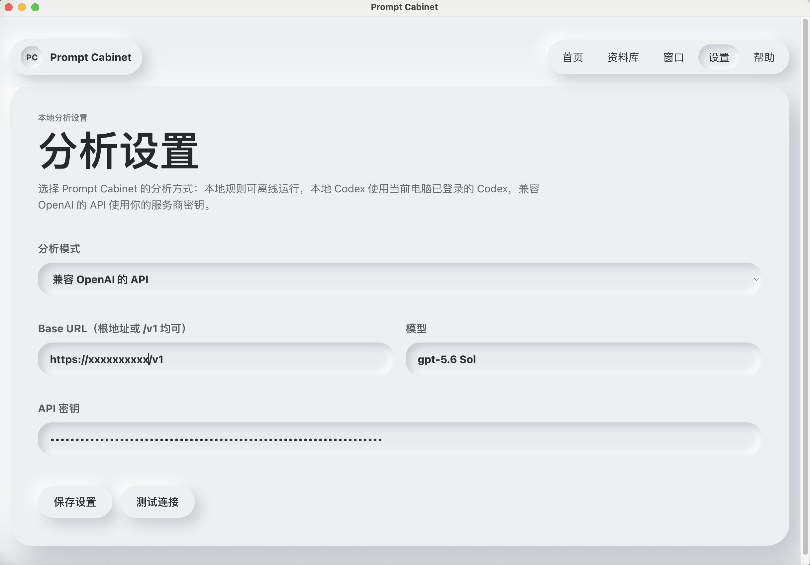
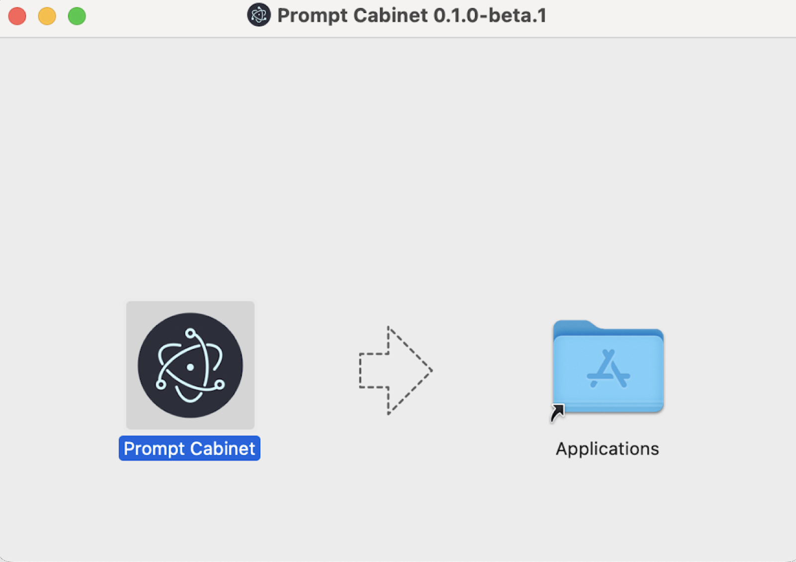
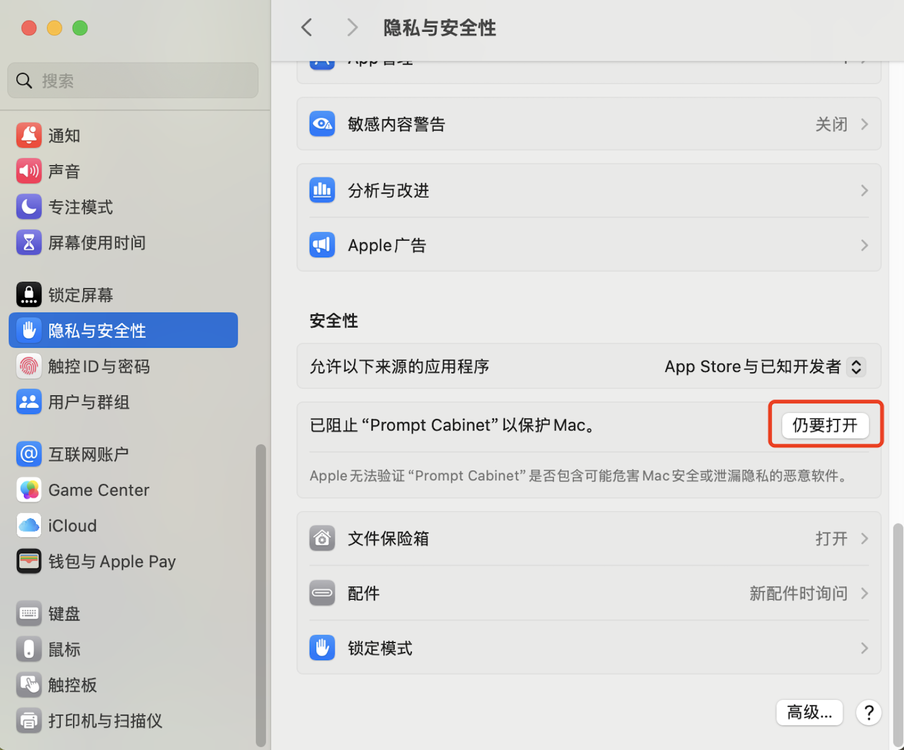
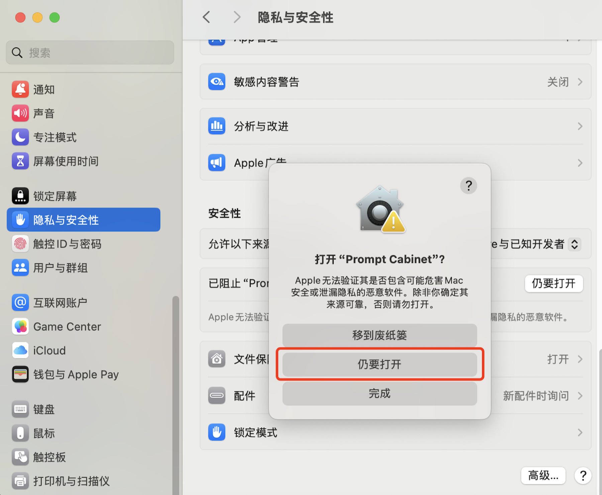

01 · ORGANIZE不是收藏。
不是收藏。
是成为资产。
自动补全标题、分类、标签和使用场景。下一次需要时，你知道该去哪里找。
收集、整理、分析，再在需要的地方一键调用。
你的 Prompt，不该散落在聊天记录里。
适用于 Apple 芯片 Mac · Windows x64 · Beta 0.1.0-beta.3
支持中文与英文
从某一刻的灵感，到下一次真正派上用场。
Prompt Cabinet 让每一个好想法，都留在触手可及的地方。
自动补全标题、分类、标签和使用场景。下一次需要时，你知道该去哪里找。
从已有 Prompt 开始改写、精炼和复用。每一次调整，都成为下一次更快抵达结果的起点。
在浏览器、聊天工具或任何工作流里，复制即可捕捉。灵感不需要等待整理的时机。
在任何输入框中选取并插入你的最佳 Prompt。少一次翻找，多一次专注。
选择你信任的模型，将原始 Prompt 快速提炼为标题、分类、标签、适用场景与可复用的结构化资产。模型、密钥和调用时机，都由你决定。

批量导入已有的积累，或一键导出完整资料库。你的 Prompt 默认保存在自己的电脑中，始终可控、可迁移。
当前 Beta 同时提供 Mac（Apple 芯片）和 Windows x64 版本。下面的图示主要展示 Mac 的安装流程；Windows 版下载后直接运行安装包即可。
Mac 点击 `.dmg`，Windows 点击 `.exe`。根据你的设备下载对应版本即可。
在安装窗口中，将左侧的 Prompt Cabinet 图标拖到右侧的 Applications 文件夹。

打开“应用程序”，右键 Prompt Cabinet，选择“打开”。如仍被阻止，请前往“系统设置 > 隐私与安全性”选择“仍要打开”。


免费 Beta 现已开放下载。Mac 和 Windows 都已提供。
觉得好用？去 GitHub 给 Prompt Cabinet 一个 Star ★ Version 0.1.0-beta.3 · Mac / Windows